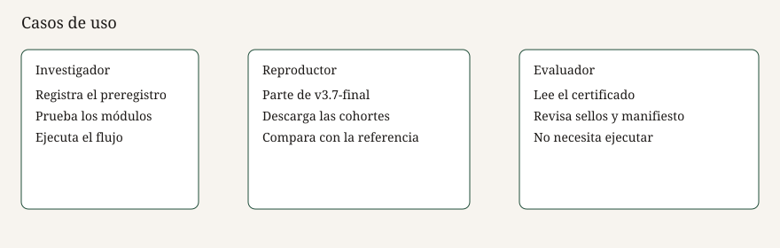
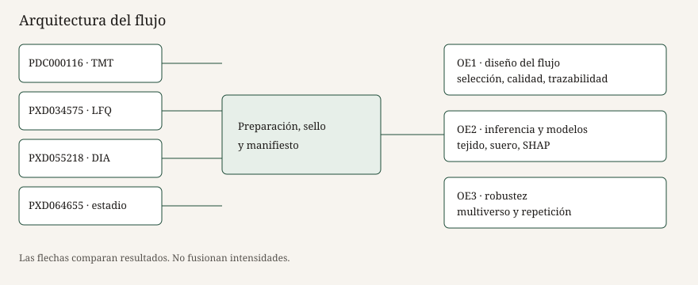
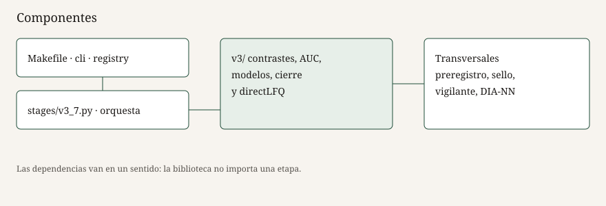
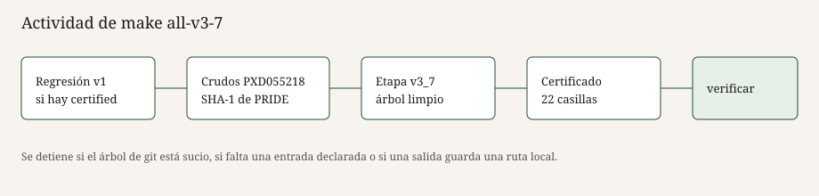

OE1. El flujo
El flujo lee cada cohorte con las reglas de su plataforma, no fusiona intensidades y deja un sello en cada salida. Los requisitos RF1 a RF9 y RNF1 a RNF7 están en docs/diseno.md.



oncogo_crc. Equivale a la figura 4 del capítulo 3.
make all-v3-7. Equivale a la figura 7 del capítulo 3.Cómo repetirlo
- Clonar el repositorio. Los números de la tesis corresponden a la etiqueta
v3.7-finaly al commit sellado71b310a3. - Instalar con Python 3.14.3:
pip install -e ".[dev]". - Descargar las cuatro cohortes (
make datos) y comprobardata/checksums.sha256. - Ejecutar
make all-v3-7conWORKSPACEapuntando a un directorio con espacio. El árbol de git tiene que estar limpio. - Comparar con
make verificar. El certificado es válido sicertificado.jsonqueda en estado publicable.